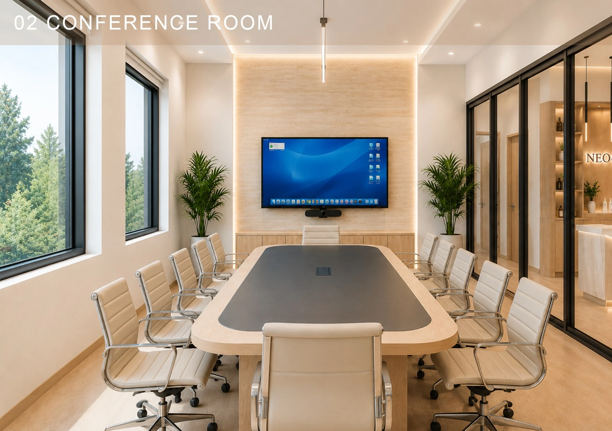
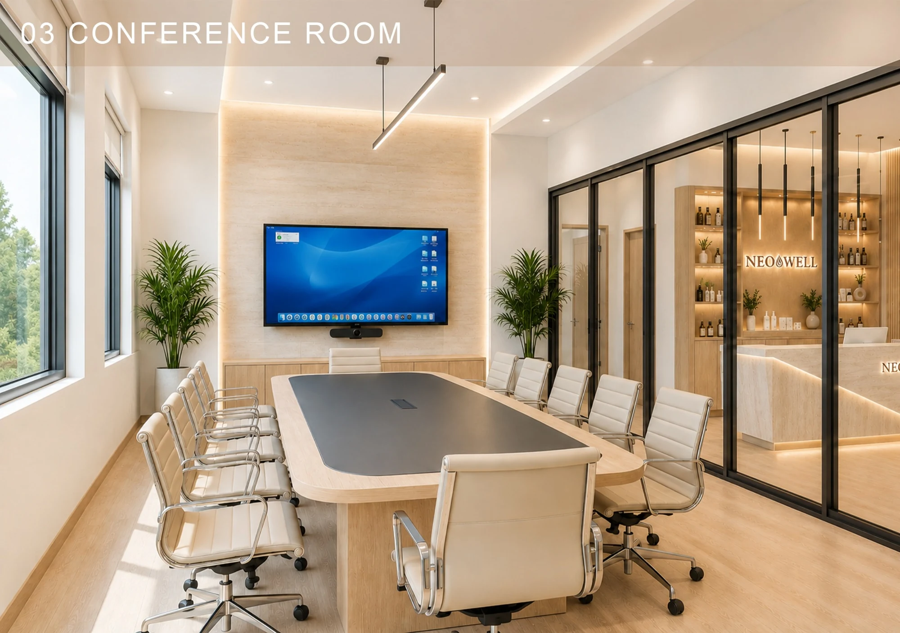
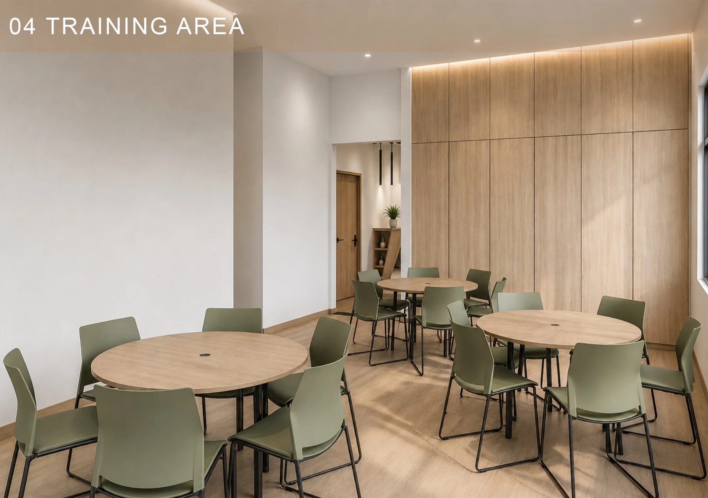
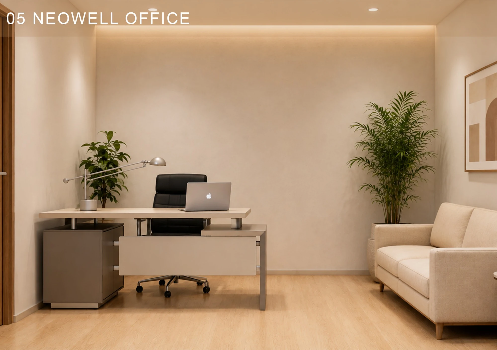
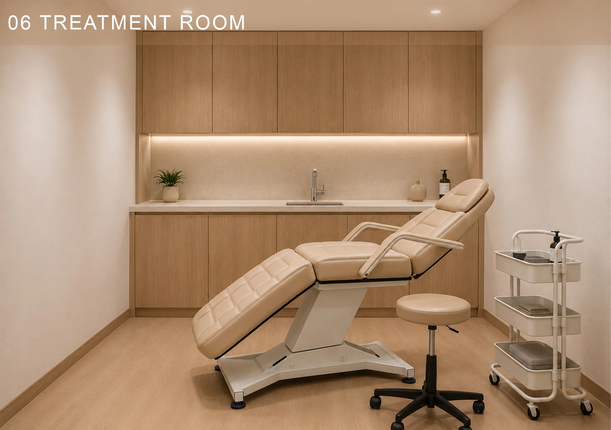
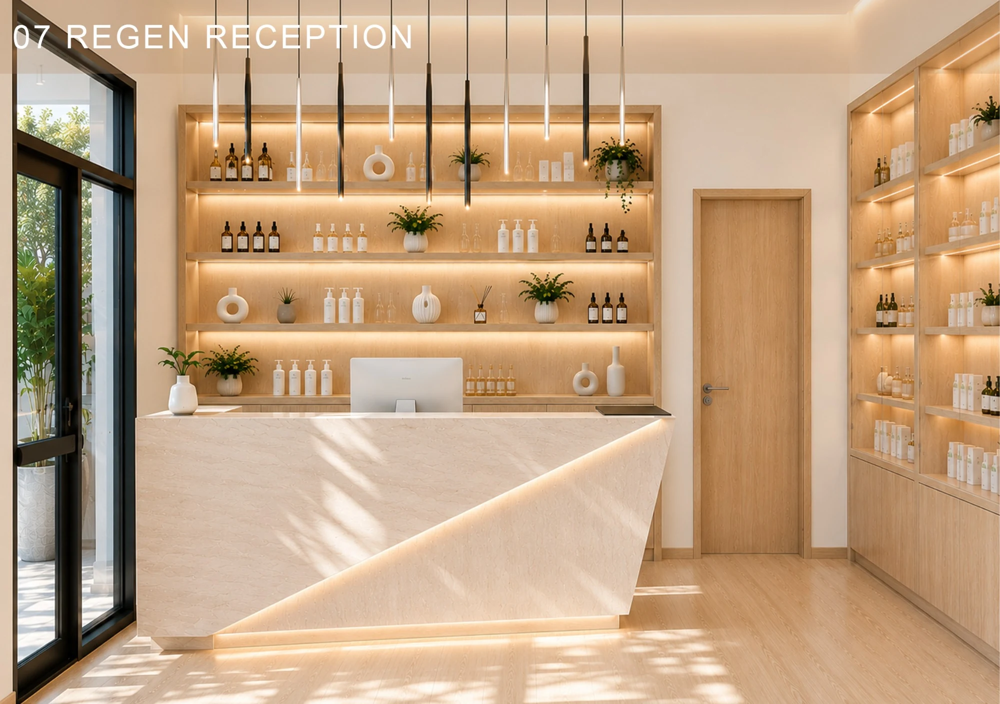
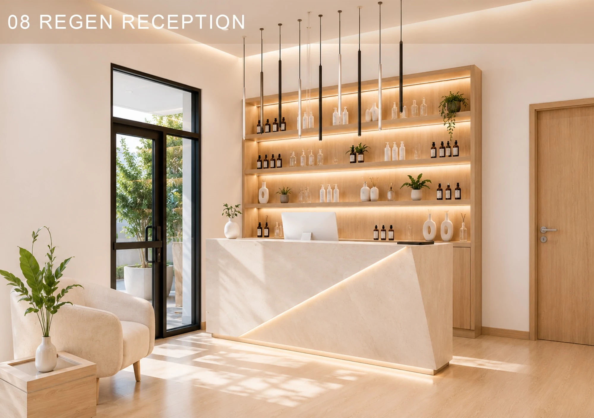
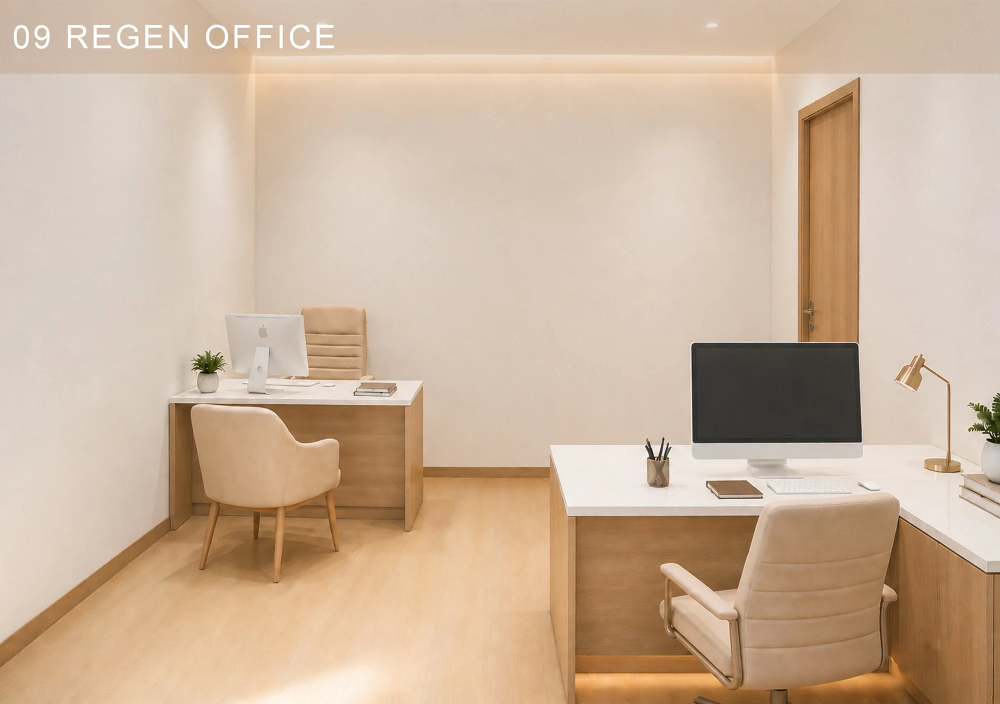
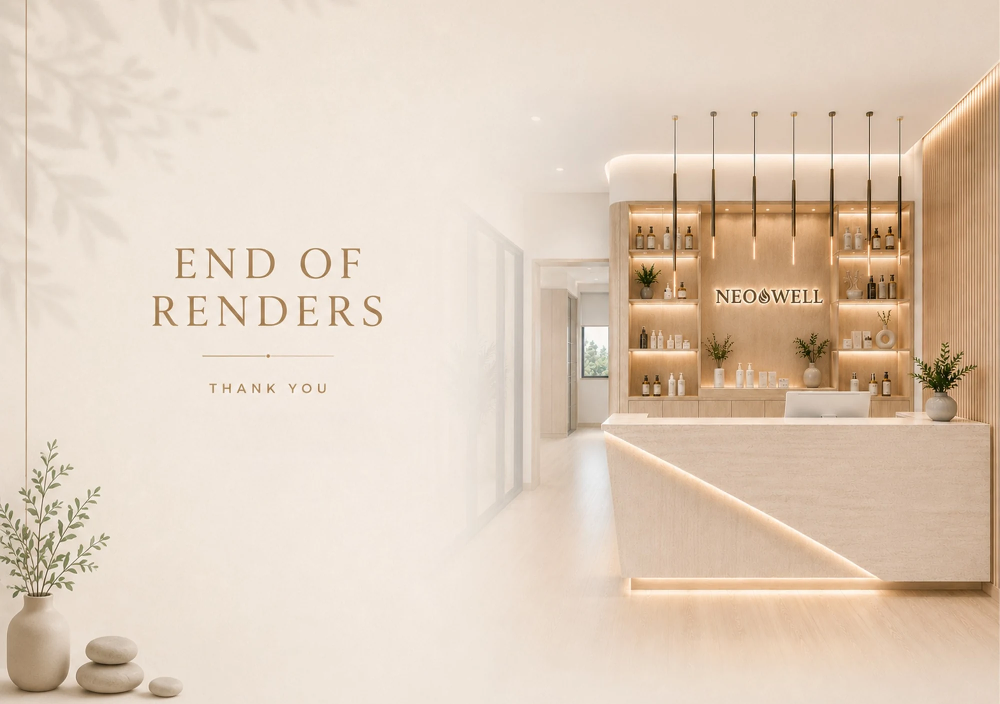
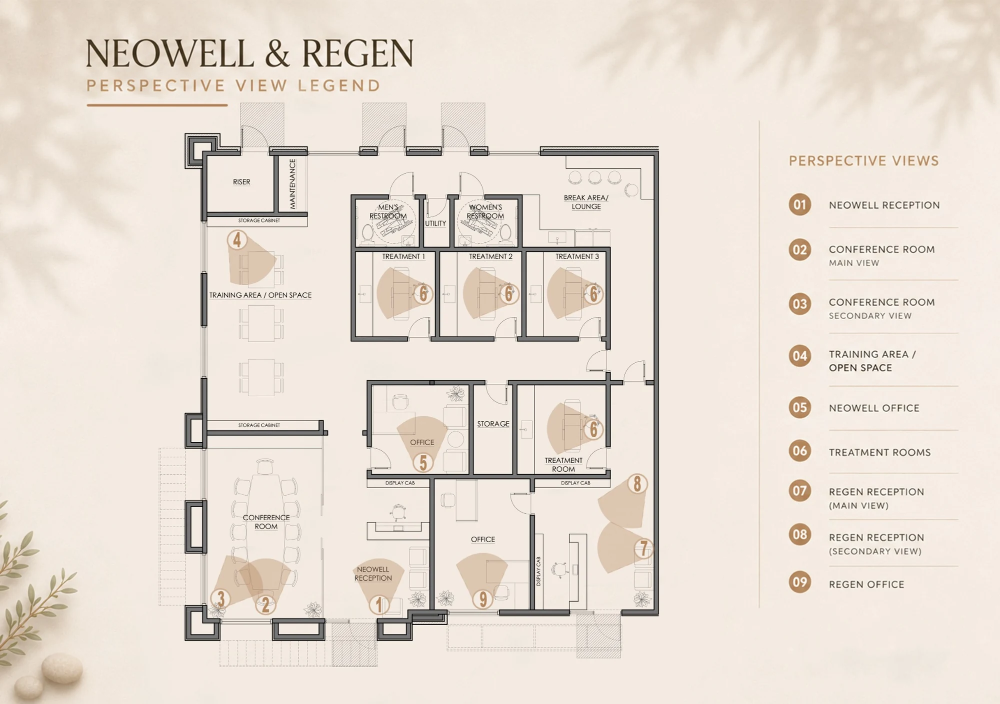

PROJECT · COMMERCIAL · INTERIOR DESIGN · TEXAS, USA
NeoWell & Regen
An aesthetic, wellness, and regenerative facility combining reception areas, consultation and office spaces, treatment rooms, a conference room, and a dedicated training area. The interior concept uses warm wood finishes, soft neutral materials, and integrated lighting to create a calm and welcoming environment.
INTERIOR PERSPECTIVES










FLOOR PLANS & DRAWINGS
